Review cliente 03/11 - conectores y cambios - antes y después
ALMAHUE EXPORT SPA, periodo 2026-08 (ABIERTO), Modo Demo. Capturas 1536x960. El recuadro verde y la etiqueta NUEVO estan solo en la captura, no en el sistema. Un clic abre la imagen. La rueda o las teclas + y - hacen zoom. Izquierda y derecha cambian entre el antes y el despues. Esc cierra. Ver tambien recorrido.html.
1. Contratistas - Traspaso y cierre (CHK-03)
Antes
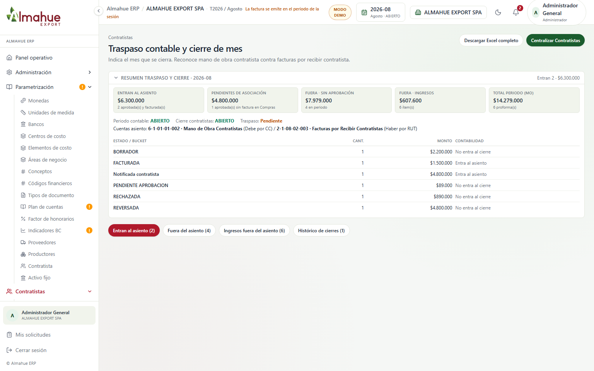
Después
Quedan visibles la tarjeta Pendientes de asociacion, los nombres de cuentas Debe 6-1-01-01-002 y Haber 2-1-08-02-003, y el desglose arbol Labor > Centro de costo > Proforma. Entran todas las proformas aprobadas del periodo aunque aun no tengan factura. No se pulso Centralizar Contratistas.
2. Contratistas - Edicion de proforma / items (CHK-04)
Antes
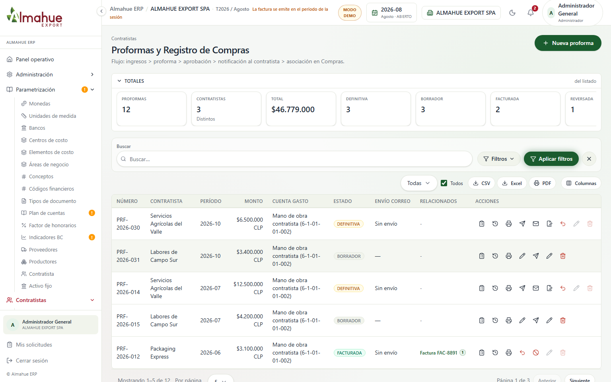
Después
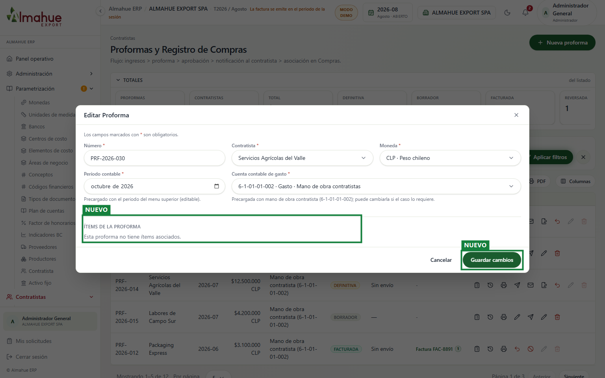
La edicion puntual de Labor / Cuartel / Cantidad / Precio vive en el modal de la proforma (base de la reapertura con doble Visto Bueno). No se pulso Guardar cambios.
El modal deja de usar Guías recibidas y agrega Activos fijos, OC insumos y Proformas con cobertura 100% del neto. Aparece Notificar diferencia al creador. No se pulso Vincular ni Contabilizar.
4. Insumos - Ordenes madre / hijas (CHK-09)
Antes
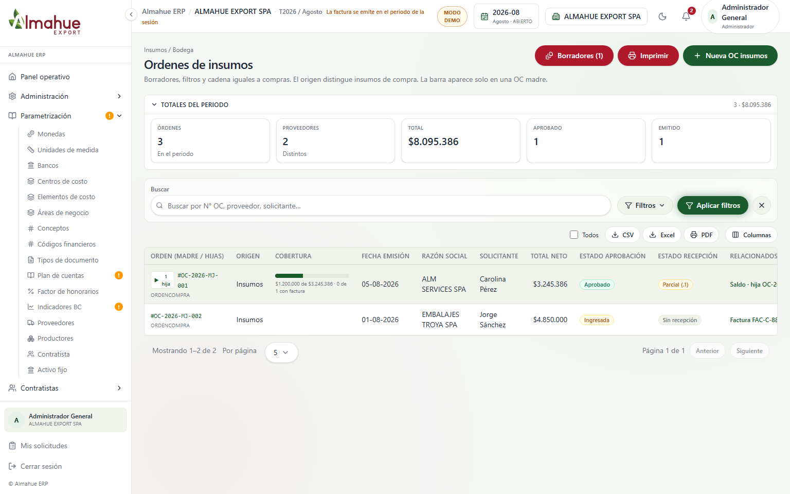
Después
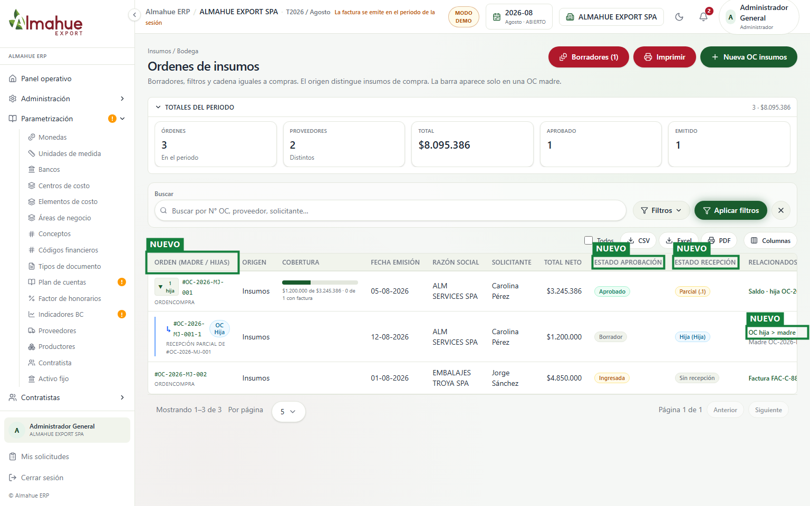
La grilla separa Estado Aprobacion y Estado Recepcion y despliega OC hijas (.1, .2) bajo la madre. No se pulso Nueva OC ni Imprimir.
5. Insumos - Ordenes de aplicacion y Recetas Packing (CHK-10 / CHK-11)
Antes
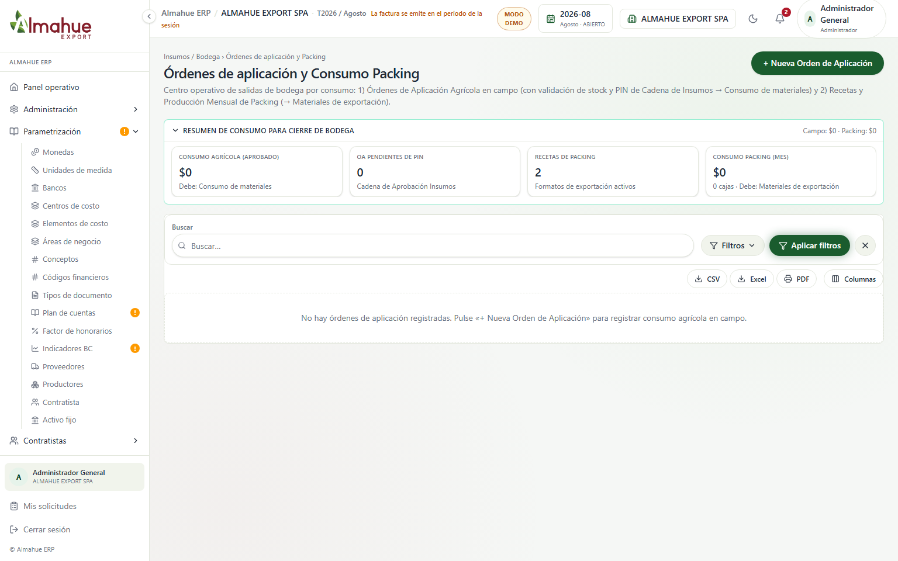
Después
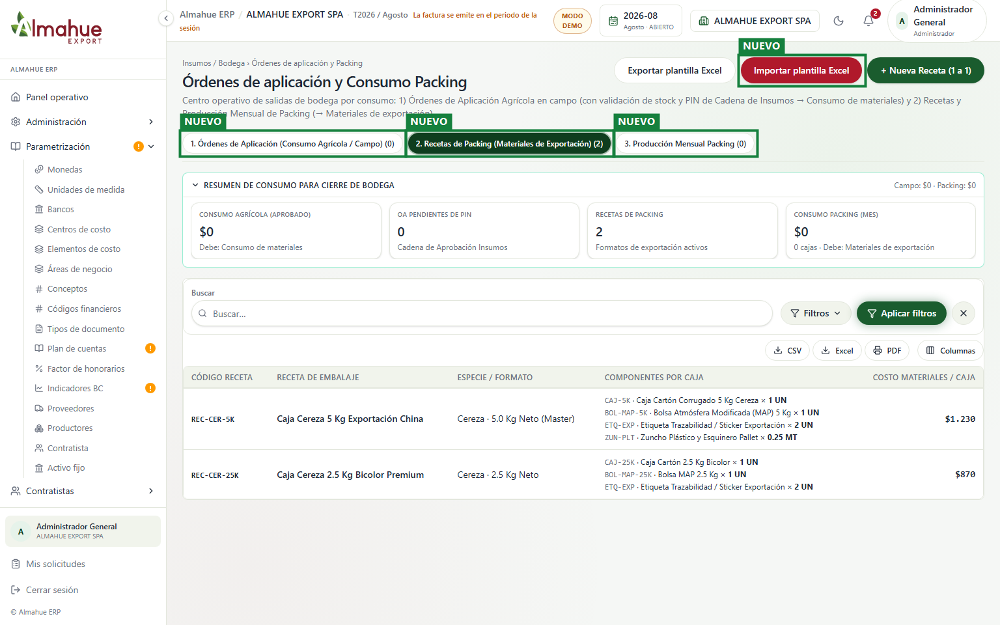
Centro de tres pestanas: Ordenes de Aplicacion (campo), Recetas de Packing (1 a 1 + Excel) y Produccion Mensual Packing. No se pulso Importar ni Nueva Receta.
6. Insumos - Libro de guias / DTE 52 (CHK-11)
Antes
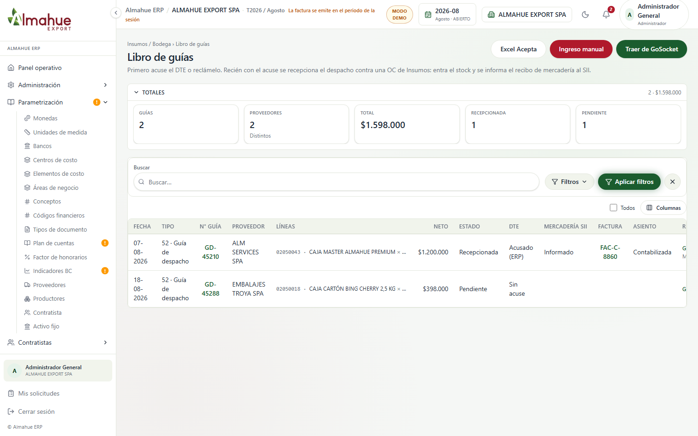
Después
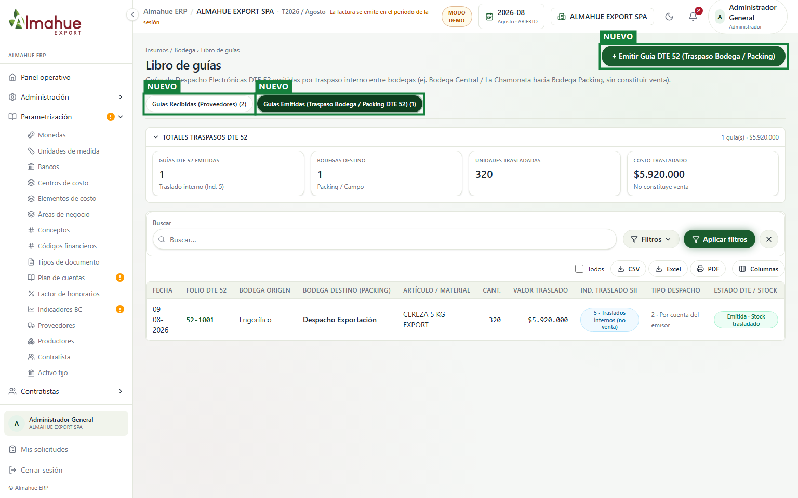
Dos pestanas: Guias Recibidas y Guias Emitidas (traspaso interno DTE 52 a Bodega Packing, no venta). No se pulso Emitir Guia DTE 52.
7. Insumos - Cierre de bodega por consumos (CHK-12)
AntesDespués
El cierre mensua se centra en consumos (campo + packing) y Parametrizacion por modulo. No hay boton de reabrir cierre. No se pulso Centralizar.
8. Activo fijo - Parametrizacion (CHK-12 / C-6)
Antes
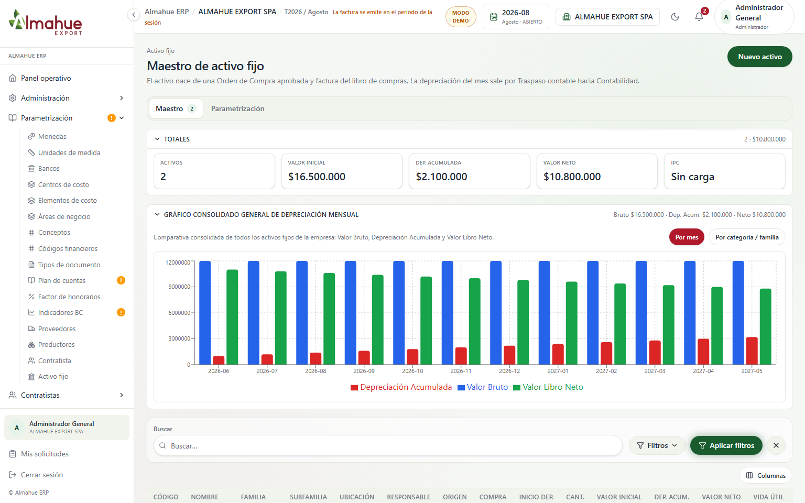
Después
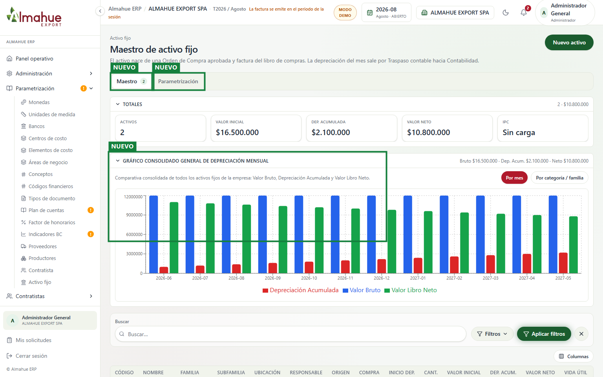
Quedan Maestro y Depreciacion junto a Parametrizacion del modulo, alineado al vinculo OC / Activo fijo en Libro de compras. No se pulso Nuevo activo ni guardar.
9. Admin - Reglas de aprobacion / grupos (CHK-13)
AntesDespués
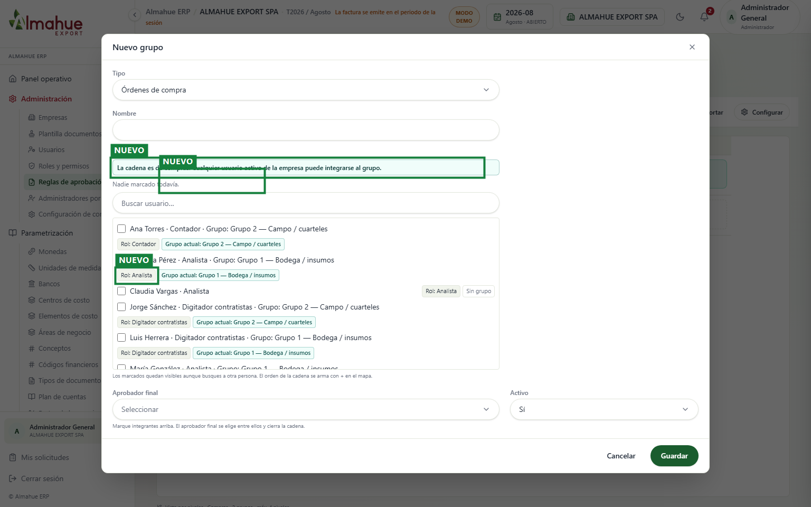
Cualquier perfil activo puede entrar al grupo; el listado muestra Rol + Grupo actual. No se pulso Guardar en el modal Nuevo grupo.
izquierda / derecha: antes y después. + y - : zoom. Esc cierra